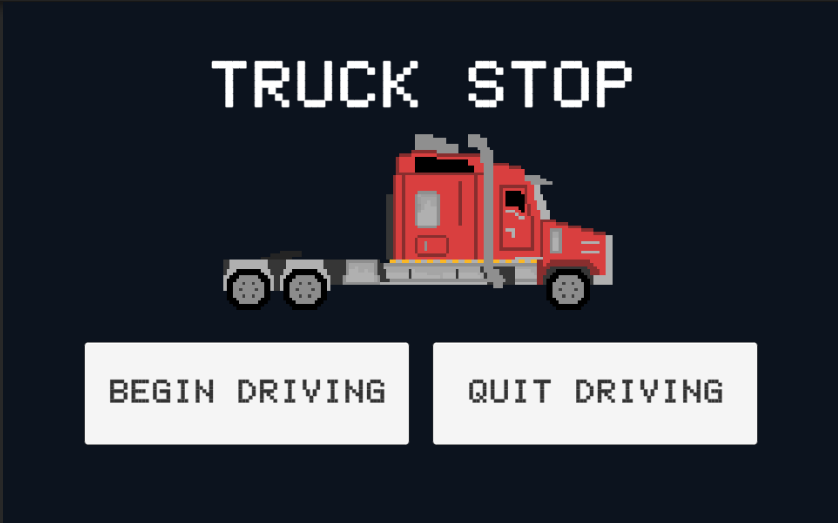

Truck Stop
Description
Driving a truck can be exhausting, but in this 2D infinite side-scrolling game, you must stay vigilant at stop signs! Your task is simple: drive a truck and stop at the signs as they appear, ensuring you don't cross the far edge or stay too short by more than 5 meters. But here's the twist: the truck's speed and road friction change randomly at each stop. Your score depends on these factors and your distance from the sign. Can you achieve the highest score while obeying the rules of the road?
Truck Stop can be played on my itch.io page here.
My Role & The Process
Project Type: Personal, Solo Project Role: Designer, Programmer, Artist Software: Unity, Aseprite Languages: C#
I designed and developed this game in Unity within a tight five-day timeframe. It began with a simple concept involving a truck and stop signs. I created an infinite road by pooling road GameObjects and managing their visibility and positions based on code conditions. Stop signs were also handled in a similar manner, determining the correct one to measure distance from the user's perspective. I made adjustments to ensure objects' positions relative to the world space origin for optimal performance in an infinite side-scrolling game. To mitigate any noticeable screen movement due to world origin shifts, I introduced an overlay and UI elements.
I designed the 2D sprites in Aseprite and then imported them into Unity. To enhance the truck's realism during gameplay, I added a basic wheel animation. The user interface design was created using Unity's TextMeshPro and canvas components for a straightforward and user-friendly experience.
What I Learned & What I Would Improve
This unique experience enhanced my efficiency and adaptability in game design and programming. To meet tight project deadlines, I strategically repurposed code from previous Unity projects, saving valuable time and emphasizing code reusability. I encountered intriguing challenges, such as creating a seamlessly repeating game scene and animating truck wheels, which expanded my skill set. These valuable lessons will undoubtedly benefit me in future game development, whether working under tight schedules or on more extensive projects.
If I were to revisit this project designed for a short timeframe and limited scope, I'd aim to enhance its visual appeal and gameplay dynamics. Adding a parallax background could provide depth and realism, making the game more immersive. Introducing new gameplay elements, like varied elevation, would increase player engagement and complexity. While these enhancements might require extra development effort, they could make the game even more captivating and dynamic. Pursuing these improvements, whether for this project or future ones, could offer valuable learning opportunities and enhance the player experience.
Screenshots
